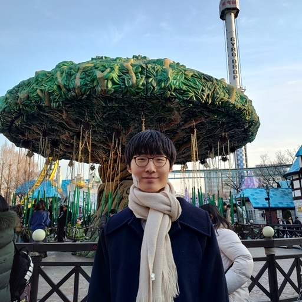
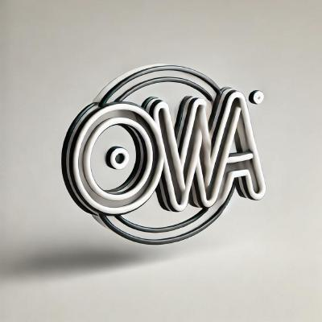

|
Suhwan Choi
I'm an undergraduate student majoring in Physics and Computer Science at Seoul National University. I'm currently a Principal Researcher
at Maum.ai, where I lead the autonomous robotics research division.
|
 |
{kind=link}
Research & PublicationsI work on embodied AI, robotic navigation, and multimodal learning. My research focuses on scaling vision-action pretraining, commonsense-aware navigation systems, and vision-language model improvements. Some papers are highlighted. |
|
WorldCam: Interactive Autoregressive 3D Gaming Worlds with Camera Pose as a Unifying Geometric Representation
Jisu Nam, Yicong Hong, Chun-Hao Paul Huang, Feng Liu, JoungBin Lee, Jiyoung Kim, Siyoon Jin, Yunsung Lee, Jaeyoon Jung, Suhwan Choi, Seungryong Kim†, Yang Zhou† arXiv 2026 arXiv / project page An interactive gaming world model using camera pose as a unifying geometric representation for precise action control and long-horizon 3D consistency. |
|
vla-eval: A Unified Evaluation Harness for Vision-Language-Action Models
Suhwan Choi, Yunsung Lee, Yubeen Park, Chris Dongjoo Kim, Ranjay Krishna, Dieter Fox, Youngjae Yu arXiv 2026 arXiv / code / leaderboard One framework to evaluate any VLA model on any robot simulation benchmark. Features batch parallel evaluation with 47x throughput, Docker-isolated benchmarks, and the largest unified VLA leaderboard (500+ models x 17 benchmarks). |
|
D2E: Scaling Vision-Action Pretraining on Desktop Data for Transfer to
Embodied AI
Suhwan Choi*, Jaeyoon Jung*, Haebin Seong*, Minchan Kim, Minyeong Kim, Yongjun Cho, Yoonshik Kim, Yubeen Park, Youngjae Yu†, Yunsung Lee† ICLR 2026 project page Scaling vision-action pretraining on desktop data enables effective transfer to embodied AI tasks. |
|
CostNav: A Navigation Benchmark for Real-World Economic-Cost Evaluation of Physical AI Agents
Haebin Seong*, Sungmin Kim*, Yongjun Cho*, Myunchul Joe, Geunwoo Kim, Yubeen Park, Sunhoo Kim, Yoonshik Kim, Suhwan Choi, Jaeyoon Jung, Jiyong Youn, Jinmyung Kwak, Sunghee Ahn, Jaemin Lee, Younggil Do, Seungyeop Yi, Woojin Cheong, Minhyeok Oh, Minchan Kim, Seongjae Kang, Samwoo Seong, Youngjae Yu, Yunsung Lee arXiv 2025 arXiv / project page / code A navigation benchmark that shifts evaluation from purely technical metrics to real-world economic cost and revenue, featuring high-fidelity physics simulation with delivery robot dynamics. |
|
Revisiting Residual Connections: Orthogonal Updates for Stable and
Efficient Deep Networks
Giyeong Oh, Woohyun Cho, Siyeol Kim, Suhwan Choi, Youngjae Yu† NeurIPS 2025 arXiv Revisiting residual connections with orthogonal updates for more stable and efficient deep networks. |
|
CANVAS: Commonsense-Aware Navigation System for Intuitive Human-Robot
Interaction
Suhwan Choi*, Yongjun Cho*, Minchan Kim*, Jaeyoon Jung*, Myunchul Joe, Yubeen Park, Minseo Kim, Sungwoong Kim, Sungjae Lee, Hwiseong Park, Jiwan Chung, Youngjae Yu† ICRA 2025 (Outstanding Paper Award at NeurIPS 2024 Workshop, 3%) project page A commonsense-aware navigation system that enables intuitive human-robot interaction through natural language understanding. |
|
ESREAL: Exploiting Semantic Reconstruction to Mitigate Hallucinations in
Vision-Language Models
Minchan Kim*, Minyeong Kim*, Junik Bae*, Suhwan Choi, Sungkyung Kim, Buru Chang† ECCV 2024 arXiv Exploiting semantic reconstruction to mitigate hallucinations in vision-language models. |
Experience |
Principal Researcher at Maum.ai (Feb 2024 – Present)
|
Machine Learning Engineer Intern at Hyperconnect (July 2023 – Jan 2024)
|
Open Source Projects |
allenai/vla-evaluation-harness

|
MilkClouds/awesome-vla-study

|
MilkClouds/vla0-trl

|
MilkClouds/SimpleRPyC
|
MilkClouds/lazyregistry
|
open-world-agents/MediaRef

|
MilkClouds/smon
|
|
 |
Open World Agents

Core contributor and maintainer with 180+ merged PRs. Built comprehensive multimodal desktop agent framework including optimized data collection tool (ocap), standardized efficient data format (OWAMcap), dataset visualizer, multimedia data management/processing pipelines, agent training, Python packaging, and CI/CD infrastructure. |
Awards & Honors |
QHack Coding Challenge (2023 and 2024)
|
2023 Quantum Hackathon (2023)
|
NAVER CLOVA AI RUSH 2022 (July
– Sept 2022)
|
Google Codejam 2022 (2022)
|
|
Website source code available on GitHub. |